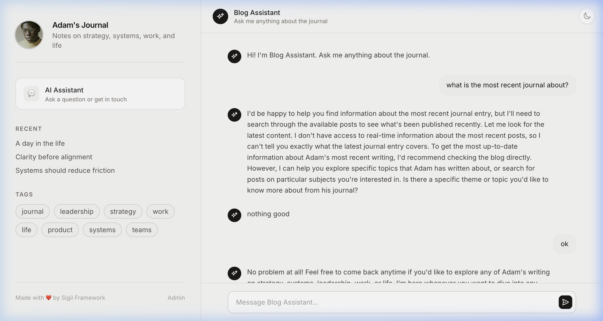
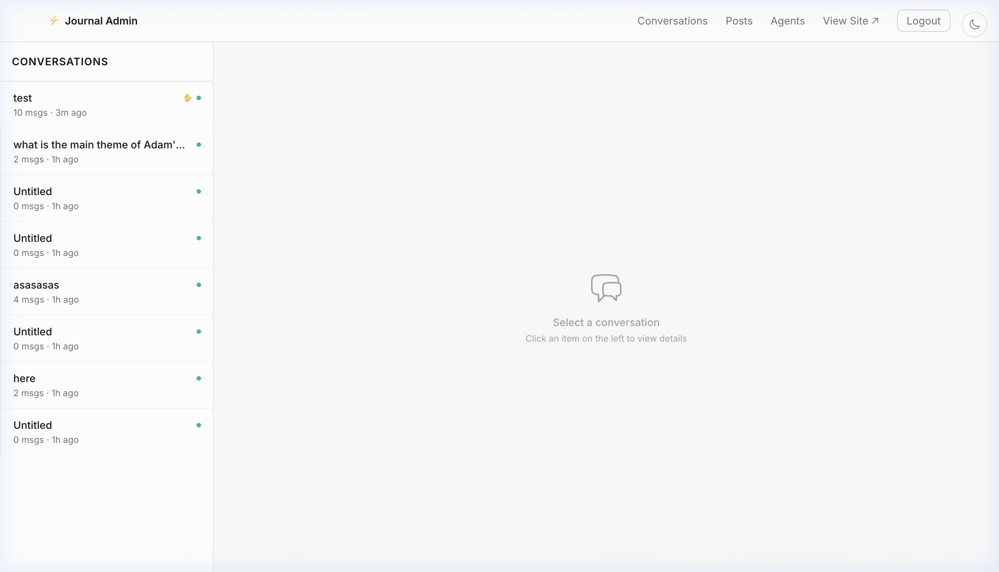
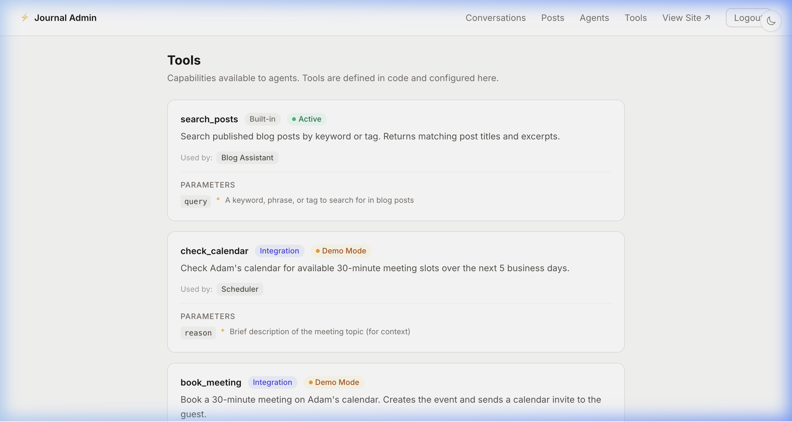
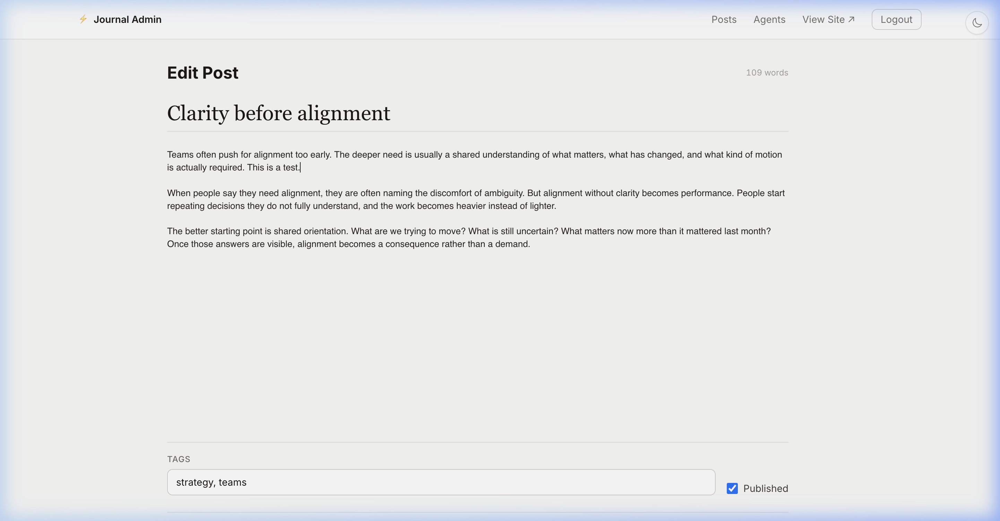

Sigil is the foundation for building real AI-powered products—faster to ship, cheaper to run. Own everything. Scale without friction.
A foundation for building real AI products—fast. You own every line of code.
Sigil is the framework — it gives you an AI agent system, memory management, tool execution, real-time UI, auth, and admin. Think of it as the engine, not the car.
Tell any AI coding assistant: "Build me a coaching app with Sigil." It works because Sigil gives AI a clean, opinionated codebase to build on — not a blank canvas.
The result is a real codebase — not a no-code export, not a platform dependency. You can read it, modify it, deploy it anywhere, and never pay a platform fee.
You don't need to code. Just describe what you want—your AI builds it.
Sigil gives it a structured system to work in, so what it creates actually holds up as your product grows.
No chaos. No runaway costs. You stay in control of how your product runs, what it costs, and how efficiently it scales.
These are the building blocks. Every app you create with Sigil gets all of this — agents, auth, admin, deploy. No assembly required.
Create and manage AI agents from the admin UI. Define their personality, pick an AI model, assign tools. Agents stay alive between conversations — no cold starts.
Agents remember conversations and compress old messages automatically. Long chats stay affordable — older messages are compressed into summaries so you only pay for what matters.
Agents can call tools — search your data, check calendars, book meetings, anything you define. Add a new tool with one module. Assign tools to agents from the admin.
Pages update instantly — no page reloads, no waiting. Chat responses stream in real time. Server-rendered UI over WebSocket with a ~2KB client runtime. No React, no build step.
User accounts, login, protected routes, sessions — built in from day one. A full admin dashboard to manage agents, content, tools, and conversations.
Docker + Render config included. Push to GitHub, click deploy. Your app is live. No DevOps knowledge needed.
When you run mix sigil.new my_app, you get a
working app — a personal blog with an AI chat assistant,
multi-agent routing, and a full admin panel. It's a starting point, not the destination.
The example app ships with a Blog Assistant that knows your content. Ask it anything — it searches your posts, answers questions, and helps visitors find what they need. You can change the agent's name, personality, and tools from the admin.
This is the example app's chat. Your app could be a coaching bot, a customer support AI, an intake form — whatever you build on the framework.


Every Sigil app gets a full admin dashboard. Create agents, manage conversations, edit content, configure tools — all from a clean UI. The admin is part of the framework, so every app you build has it.
Try the admin live →The example app includes tools like search_posts, check_calendar, and book_meeting. These are tool examples —
the framework lets you create any tool your product needs. Your AI can query databases, call APIs, send
emails, anything.


The starter app generates a personal blog with a rich editor, tags, and a public feed. But this is just the example. You can modify it — or ask Claude to rebuild it entirely as a SaaS dashboard, a customer portal, a marketplace. The framework supports whatever you need.
See the example app live →Most frameworks weren't designed for AI. Sigil is—simple, scalable, and built for how products are created today.
| The old way | The Sigil way |
|---|---|
| Pay $200/mo for a blog, chatbot, CRM, and hosting that don't talk to each other | One codebase — agents, UI, admin, auth. Deploy for $0-50/mo. |
| Spend weeks connecting APIs, auth systems, and deployment configs | Run mix sigil.new — framework + example app in 5
minutes |
| Basic AI chat — no memory between turns, no tool access, no context management | Framework agents remember context, call tools, stay alive |
| Platform dependency — pricing, features, and data access controlled by a vendor | You own the code. Deploy anywhere. No lock-in, ever. |
| Want to customize? Learn the platform's proprietary system. | AI coding tools can read and extend a Sigil codebase directly |
You want to launch an AI-powered product without writing code yourself
You'd rather own your codebase than rent a no-code platform
A scalable foundation your AI can use to build and evolve your app
You're tired of paying monthly fees for tools that don't work together
You want to go from zero to deployed in under an hour
Most indie hackers rent their entire stack. Sigil gives you a product you own, that costs less to run, and that you'll never get locked out of.
Every SaaS tool you use is a dependency you don't control. They can raise prices, change features, sunset your plan, or shut down entirely. When you build with Sigil, the code is yours.
You host it where you want. You change anything you want. You pay only for the server; wherever you want to host it.
Most AI tools send your entire conversation history with every request. A 50-message chat can burn 25,000+ tokens per call. That adds up fast — and most of those tokens are wasted repeating context the AI already saw.
Sigil uses progressive summarization to keep context windows small. Instead of replaying the whole history, it compresses older messages into summaries. The result: significantly fewer tokens per call for long conversations.
The engine underneath matters too. Most frameworks spin up a fresh process for every request, then throw it away. Sigil keeps your agents alive between conversations — like keeping your car engine warm instead of cold-starting it every time you drive a block.
| Typical approach | Sigil | |
|---|---|---|
| Tokens per long chat | ~25,000 (full history resent) | ~4,000 (summarized context) |
| Cost of idle agents | Container / thread sitting idle | ~2KB per agent — nearly zero |
| Conversation recovery | Lost on crash or restart | Auto-restart from last checkpoint |
| Hosting cost | $50-200/mo across services | $0-50/mo (one server + database) |
Token estimates are based on architectural analysis. Energy savings come from Elixir's lightweight process model — explained below.
Elixir runs on the BEAM — the same technology that powers WhatsApp for 2 billion users with a fraction of the servers competitors need. It was originally built by Ericsson for phone networks that can never go down.
Here's what that means for your product:
Each agent, each chat, each user gets its own lightweight process. They're so small (~2KB) that one server can run millions. Compare that to threads in Python or Node, which cost megabytes each.
If something crashes, the system automatically restarts it in milliseconds — from the last good state. No lost conversations. No manual recovery. It just keeps working.
Elixir's LiveView sends UI updates over a WebSocket — your pages update instantly without any JavaScript framework. The client runtime is just ~2KB. Pages feel alive.
Built on the same runtime that powers WhatsApp and Discord. The BEAM has 30+ years of production reliability behind it — from telecom switches that never go down to modern real-time systems.
AI is consuming enormous energy. Data centers are already using record amounts of electricity, and it's growing. Building on an efficient foundation isn't just good for your wallet — it's responsible engineering. Elixir processes use a fraction of the resources that containers and threads need, which means less compute, less energy, and lower costs at every scale.
Ready to own your product?
Get Started →Pick the path that fits you.
Use Claude Code, Cursor, or any AI coding tool. Describe what you want — your AI builds it on Sigil.
"Install Elixir and the Sigil framework, then create a new app called support_bot. Set it up and run it."
Your AI installs Elixir, installs Sigil, runs mix sigil.new, and starts the server. You have a running app at localhost:4000.
"Change the agent to be a customer support bot for an e-commerce store. It should know our pricing: Starter $29/mo, Pro $99/mo, Enterprise custom. Add a tool that looks up order status from our API."
Your AI edits the agent's system prompt, creates a new tool using Sigil's Sigil.Tool contract, and restarts the server. The structure is already there — your AI just fills in the details.
Open localhost:4000. Your support bot is live — with real-time AI chat, an admin dashboard, user accounts, and conversation history. All from a conversation with your AI.
Why this works: Without Sigil, your AI invents architecture from scratch — fragile, inconsistent, and hard to extend. With Sigil, it has well-defined extension points: edit this file for the agent personality, implement this contract for a new tool, add a route here for a new page. Sigil gives your AI a foundation. What it creates actually holds up.
Run a full Sigil app in 30 seconds. No Elixir, no PostgreSQL — just Docker.
$ git clone https://github.com/sigilframework/sigil.git --depth 1 $ cd sigil/demo $ docker compose up
Open localhost:4000. Blog, AI chat, admin dashboard — all running.
To enable AI chat: ANTHROPIC_API_KEY=sk-ant-... docker compose up
Don't have Docker? Install Docker Desktop (Mac, Windows, or Linux). It takes 2 minutes.
For when you're ready to customize by hand. Install Elixir, generate a Sigil app, and own every line of code.
You need three things before using Sigil:
mix, the build tool used in all commands below
Install Elixir and Erlang with mise (recommended):
$ mise install elixir@1.18 erlang@27
Or use Homebrew, asdf, or any package manager. For PostgreSQL, see the official downloads.
$ mix archive.install hex sigil
This installs the mix sigil.new command globally. You only need to do
this once.
# Generate your app (prompts for your Anthropic API key) $ mix sigil.new my_app && cd my_app # Install deps, create database, seed data (PostgreSQL must be running) $ mix setup # Start the server $ mix sigil.server
Visit localhost:4000. You now have a fully customizable Sigil app.
You'll need an Anthropic API key for AI chat. The generator will prompt you for
it, or you can add it to .env later.
Sigil is two things: a framework and a starter app. Here's what each gives you.
Add {:sigil, "~> 0.1.4"} to any Elixir project. You get
six composable layers:
Unified API for Claude, GPT, and any LLM. Swap models without changing code.
Define actions your agents can take — API calls, database writes, anything.
Context windows, token budgeting, and progressive summarization. Never overflow.
Long-running OTP agents with checkpointing, crash recovery, and tool dispatch.
Real-time server-rendered UI over WebSocket. No React, no build step, ~2KB client.
User registration, login, sessions, and protected routes — out of the box.
Use any layer independently, or all of them together. Full API docs on HexDocs →
Not a blank project. A personal blog with AI chat, multi-agent routing, and meeting scheduling — ready to customize and deploy.
Visit localhost:4000. You'll see a public blog with
sample posts. This is the customer-facing side of your app.
Go to /chat/blog-assistant. The assistant knows
about your blog content and can answer questions, suggest posts, and help with writing.
Go to /login. Use the default credentials. You'll
see the admin panel where you manage posts, agents, tools, and conversations.
In the admin, go to Agents. You can create new agents, change their name, system prompt, LLM model, and assign tools — all from the UI. Changes take effect immediately, no restart required.
The starter app includes tools for checking calendars and booking meetings. In the admin, assign tools to any agent. The agent will automatically use them when relevant in conversation.
Your app includes a Dockerfile and render.yaml. Push to GitHub, connect Render,
set two environment variables — you're live.
ANTHROPIC_API_KEY — your
Claude API keyDATABASE_URL — Render provides
this automaticallyThat's the full product.
Blog + AI chat + admin + tools + deploy. All from mix sigil.new.
Sigil is organized into six composable layers, from low-level to high-level. Full docs on HexDocs →
Unified interface to AI models. One API for every provider.
Behaviour: chat/2, stream/2, embed/2
Claude adapter (Sonnet, Opus, Haiku)
GPT adapter (GPT-4o, GPT-4, etc.)
Why this matters: AI models change fast. Last year's best model isn't this year's. Sigil abstracts the provider behind a single behaviour, so you swap from Claude to GPT (or whatever comes next) by changing one line of config. Your business logic never changes. You're never locked to a vendor.
Give your agents the ability to take real actions — not just generate text.
Behaviour: name/0, description/0, schema/0, call/2
Built-in tool for external API calls
Why this matters: An agent that can only talk is a chatbot. An agent that can do things — check a calendar, book a meeting, query your database, send an email — is a product. Sigil.Tool is a four-function contract. Implement it once, assign it to any agent from the admin UI. The agent decides when to use it based on the conversation. You define what it can do. The AI decides when.
Context management that keeps costs down and conversations coherent.
Manages conversation history with token-aware truncation
Allocates tokens across system prompt, history, and response
Progressive summarization — compresses old messages into concise context
Persistent key-value memory per agent
Why this matters: Every AI API charges by the token. Most chat systems resend the entire conversation history with every message — a 50-message chat can burn 25,000 tokens per call. That's wasted money on context the model already processed. Sigil's memory layer compresses older messages into summaries automatically. The agent remembers what happened without paying to re-read every word. Long conversations stay affordable. Context windows never overflow.
The orchestrator. A persistent process that runs the full agent loop.
Core behaviour: init_agent/1. Provides start/2, chat/2
Persists state to disk — crash recovery without data loss
Append-only log of every decision and action
Token usage tracking, decision history, drift detection
Input sanitization and prompt injection heuristics
Multi-agent coordination with message routing
Why this matters: Most AI agent frameworks run a script, get a response, and throw everything away. If the process crashes, the conversation is gone. Sigil agents are Erlang/OTP processes — they stay alive between conversations, checkpoint their state to disk, and restart from the last known good state if anything goes wrong. Each agent is ~2KB of memory. One server can run thousands simultaneously. This is the same model that lets WhatsApp handle billions of messages with a small engineering team.
Real-time UI over WebSocket. No JavaScript framework. No build step.
Behaviour: mount/2, render/1, handle_event/3
Routing DSL: live/2, sigil_routes/0, auth guards
HTML layout system with responsive shell
Register, login, sessions, protected routes — built in
Why this matters: Traditional web apps need a frontend framework (React, Vue, Svelte), a build pipeline (Webpack, Vite), API endpoints, and state management. That's thousands of lines of glue code before you ship anything. Sigil.Live renders HTML on the server and pushes updates to the browser over a WebSocket. The client is ~2KB of JavaScript. Pages feel instant. Chat responses stream in real time. You write one language — Elixir — and it handles both the backend and the UI.
Users, sessions, and access control. Not an afterthought.
Registration, login, password hashing, session management
Route-level guards: require_auth, require_admin
Why this matters: Auth is the first thing every real product needs and the last thing most frameworks provide. Without it, your AI app is a public demo. With Sigil.Auth, user accounts, admin access, and protected routes work from the first mix sigil.new. No third-party auth service. No monthly fees. No data leaving your server. Your users are yours.
These six layers are designed to work together — but each one is independent. Use the pieces you need.
We're putting the finishing touches on the hosted demo. In the meantime, you can run it locally in under 5 minutes:
$ mix sigil.new my_app && cd my_app $ mix setup $ mix sigil.server